Leads & grows teams
Scaled a team from 10 to 80+ and coached the leads who run it. Designs training that sticks and builds the kind of trust that keeps people around.
Lemur catta arielis · common name: “Lemur”
A support operations leader, 15 years in the field. Known for building calm, capable teams and leaving every process tidier than she found it.
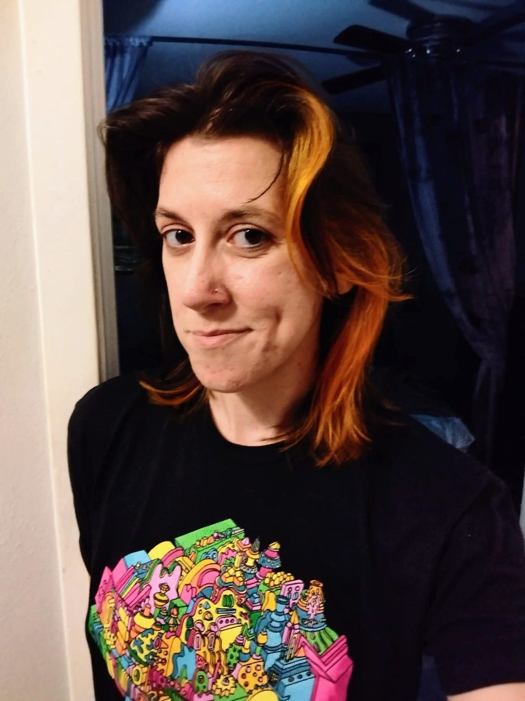
// off-world · handle:
Ariel Shirk, after 5pm. Leatherworker, weaver, tree planter, keeper of one old cat and two dogs, and a citizen of Neotropolis, the cyberpunk city that appears in the Mojave once a year.
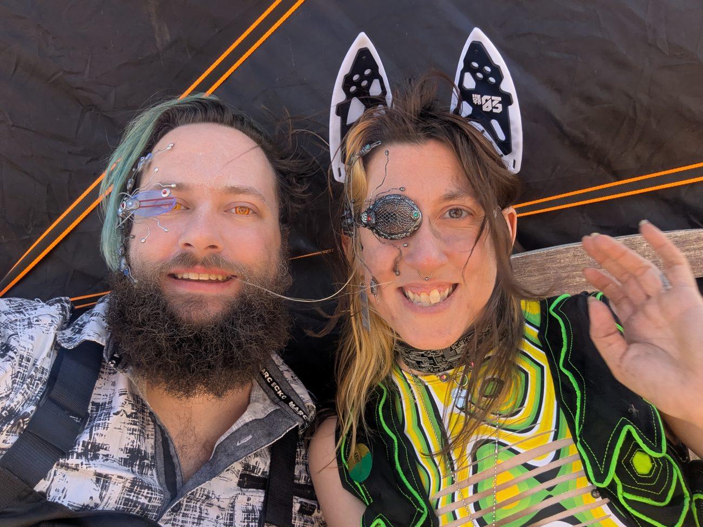
Field measurements// stats.log
Distinguishing traits// core_skills
Scaled a team from 10 to 80+ and coached the leads who run it. Designs training that sticks and builds the kind of trust that keeps people around.
Tracks KPIs, forecasts volume, and listens to the frontline, then adjusts the roadmap based on what the numbers and the people actually say.
Reworks workflows with product, engineering, and policy, and keeps quality steady through policy changes, incidents, and rapid growth.
Known range// the day job
B.A., Philosophy
Texas State University, San Marcos · 2010
Useful training for anyone who has to ask “but what problem are we actually solving?”
Reported sightings// peer_reviews
What truly sets Ariel apart is her leadership. She strikes that rare balance between meeting complex corporate demands and showing genuine care for the people she leads.
If you’re looking for someone who delivers results, earns trust, and elevates the people around her; Ariel is that person.
I witnessed outstanding leadership and direction that directly impacted our KPIs and client satisfaction… If you are looking for a wonderful person who has true drive and skill in decision making, then you have found her!
Ariel has passion to understand and optimize processes, keen to identify inefficiencies and develop strategies to improve outcomes.
She was always the first to volunteer and eager to learn and adapt to new programs… will be an asset to any organization that she works with!
Excerpts from recommendations on Ariel’s LinkedIn profile.
Enrichment// off the clock
The things that make Ariel good at support show up everywhere else: she shows up for people, makes things with her hands, and looks after small creatures.
Ariel plants trees around Austin with TreeFolks, and volunteers with the Refugee Collective.
She also never misses an election.
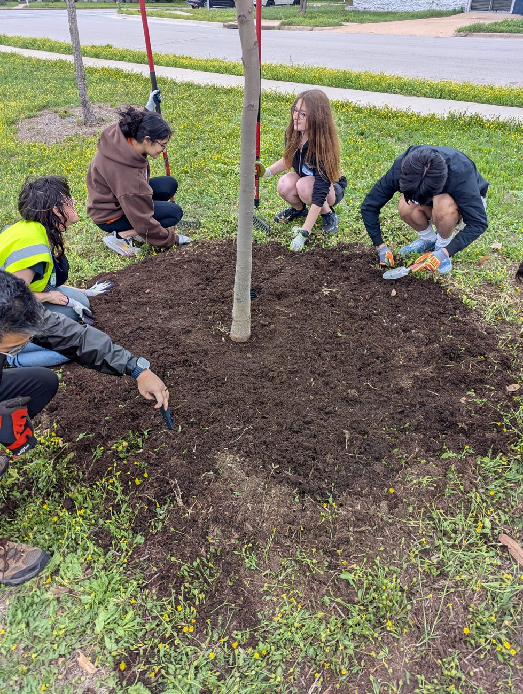
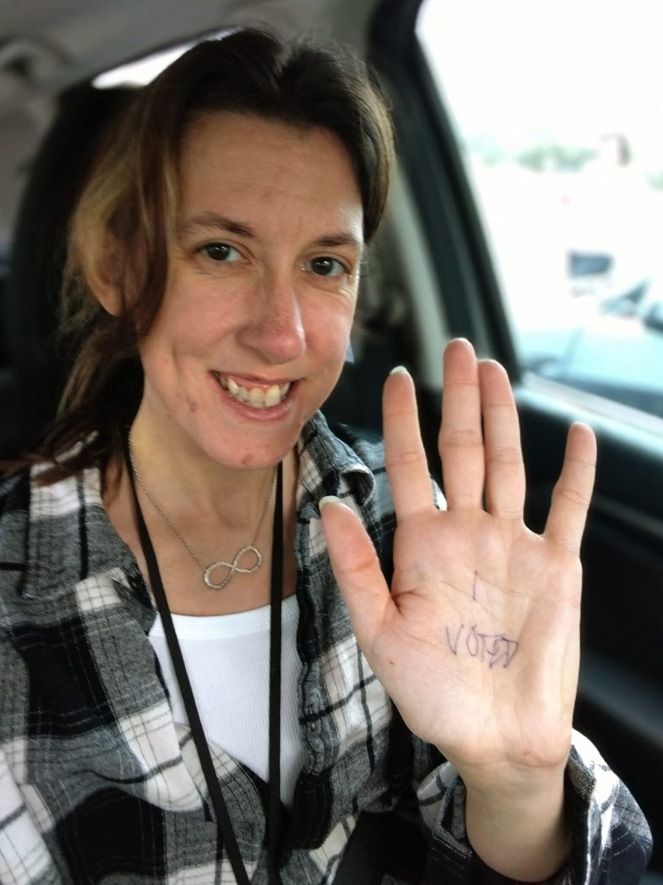
Leatherwork, weaving, and whatever craft has most recently caught her attention. Slow, careful work where you can hold the result at the end.
Her maker’s mark, stamped into each leather piece, is a small lemur with its tail in the air. The one walking around this site is drawn after it.
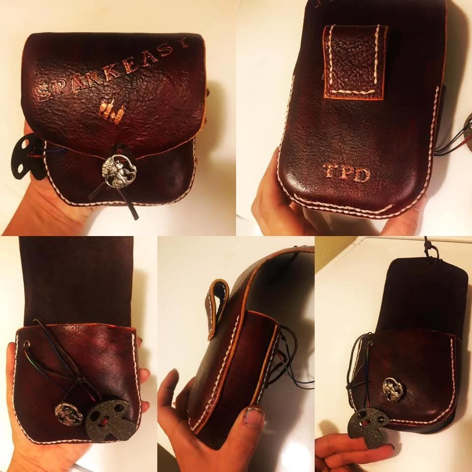
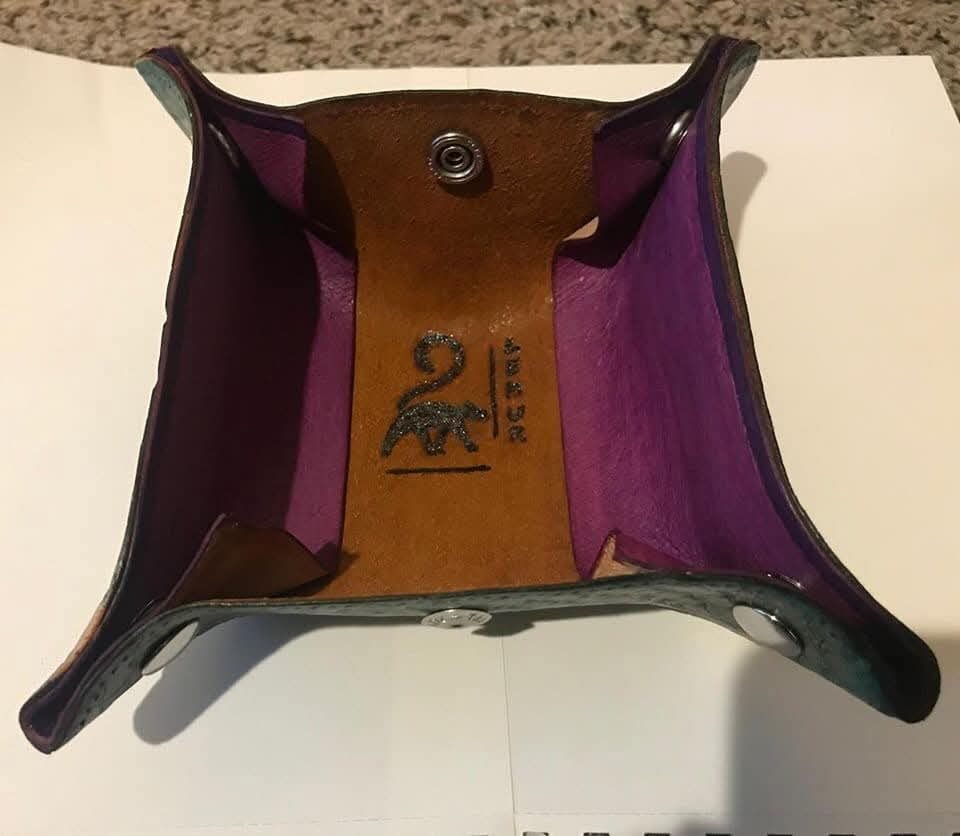
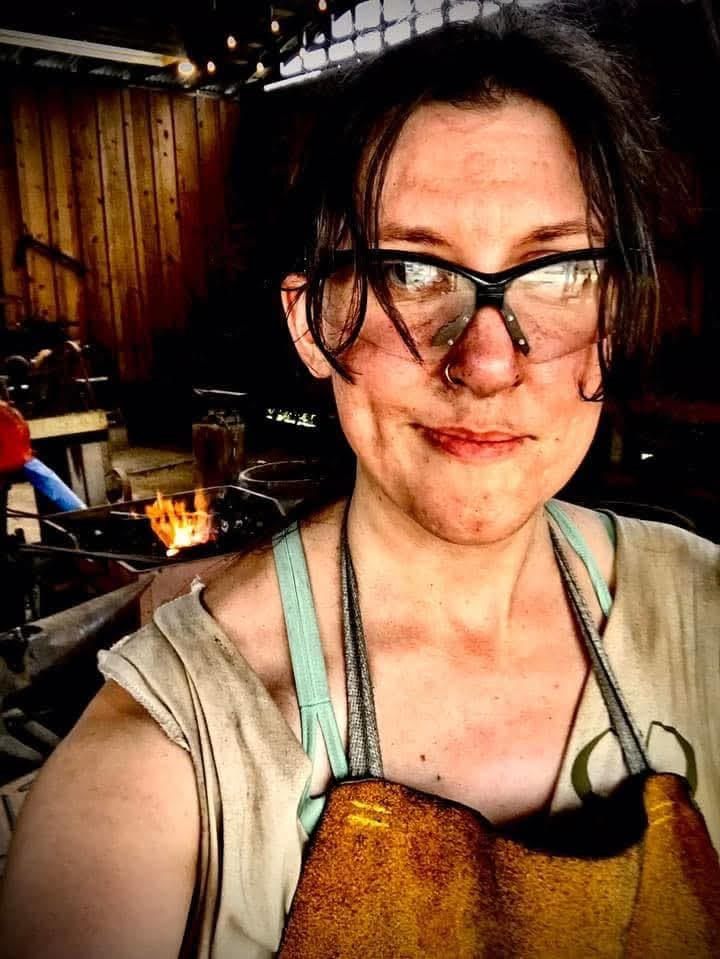
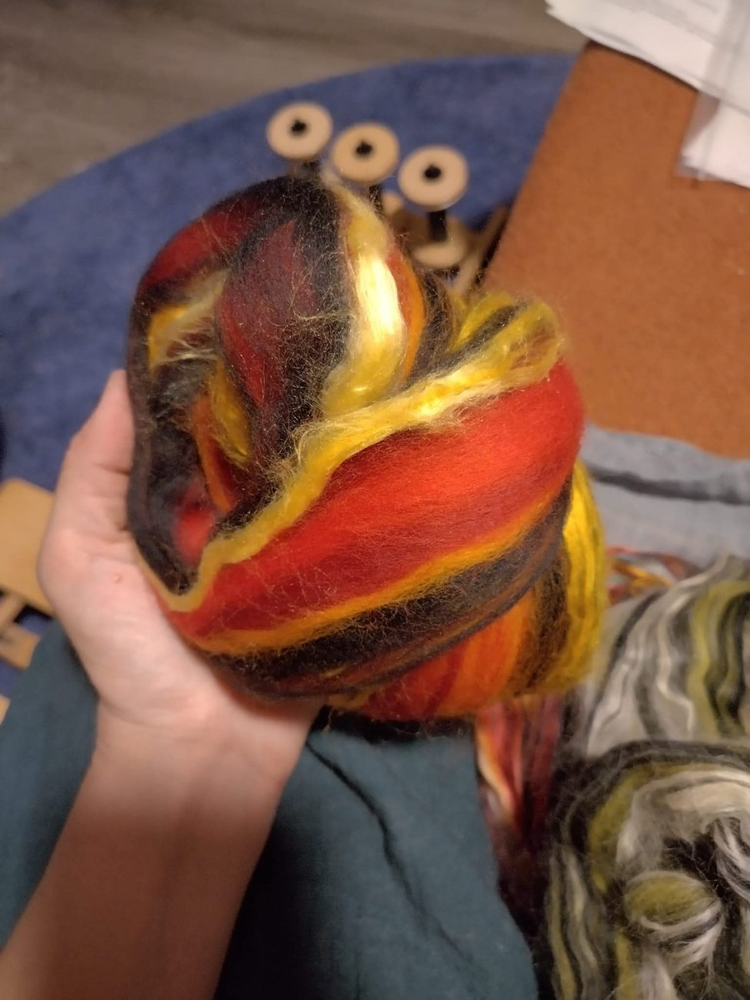
Home is shared with Smudge, a distinguished all-white old-man cat, and two dogs: Sage, who is tall and white and cheerful, and Poncy, a Cavalier who is mostly ears.
Given the nickname, Ariel also takes every chance she gets to meet an actual lemur.
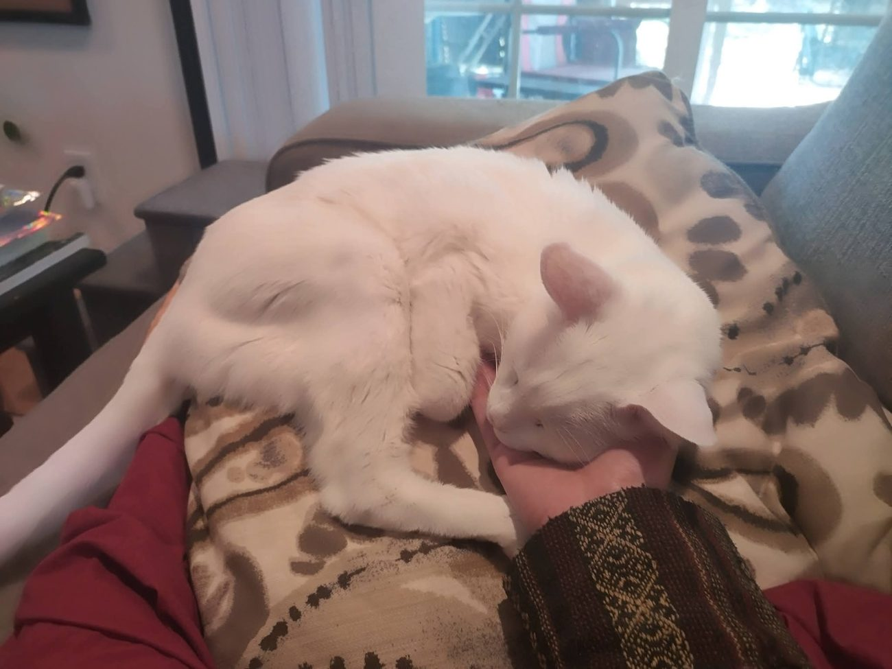
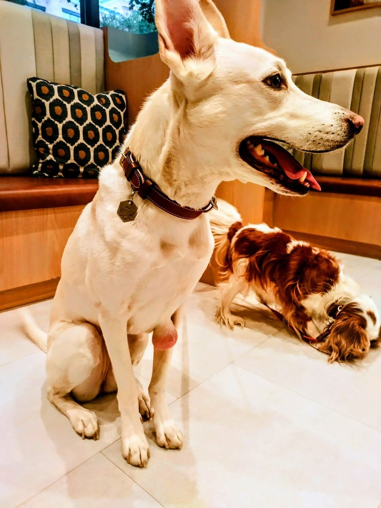
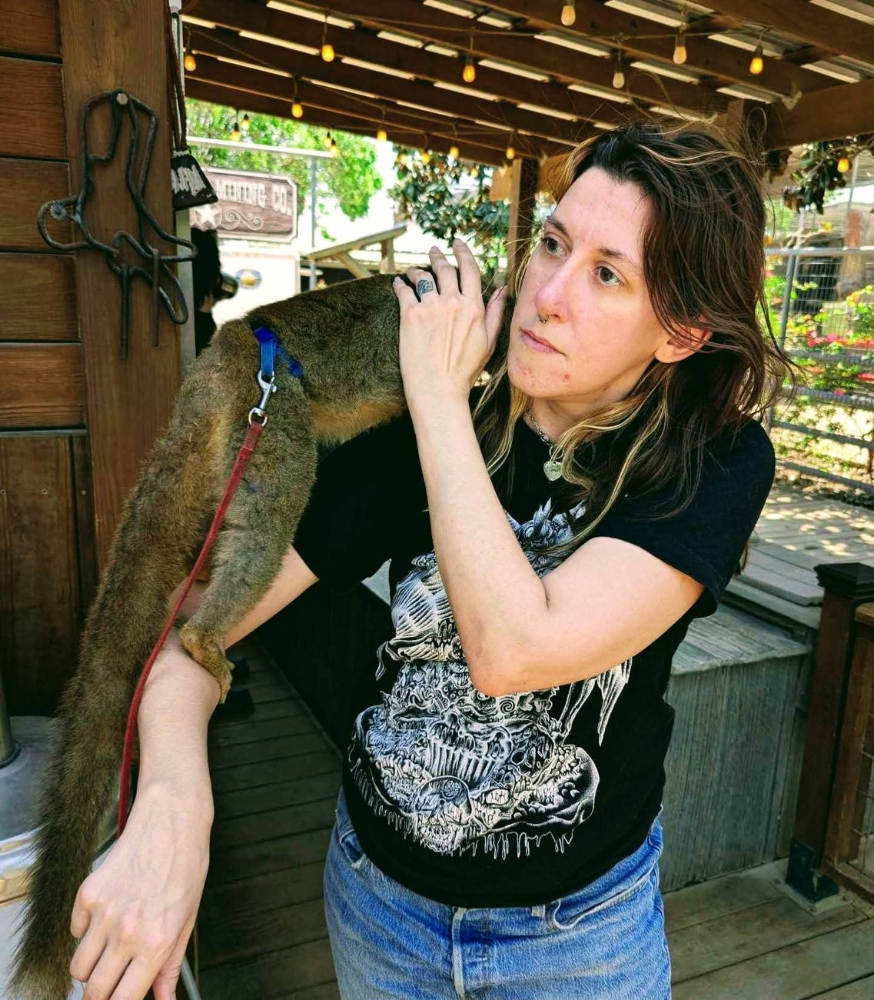
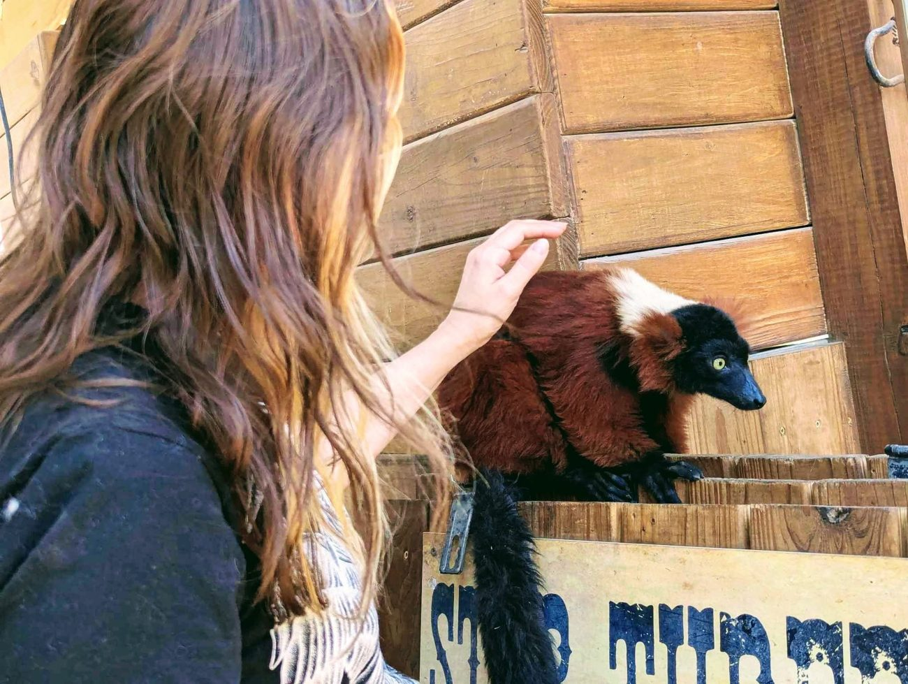
Annual migration · Mojave Desert// once a year · Mojave Desert
Once a year Ariel and her partner pack up and head into the Mojave for Neotropolis, an immersive cyberpunk city that springs up in the desert for a few days. Costumes, neon, dust, and a whole town of people building a story together.
It’s the trip she looks forward to all year, and a good reminder that the best communities are the ones everyone helps make.
How to approach// open channel
Ariel is looking for her next role leading support, trust & safety, or product operations teams. Approach calmly; she responds well to email.